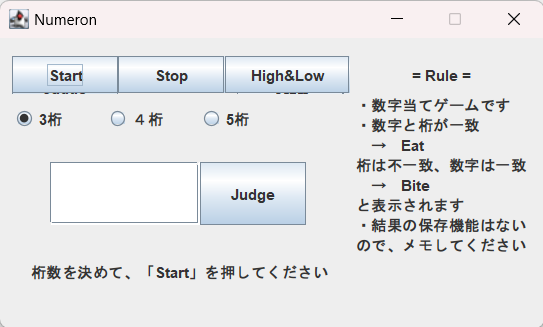
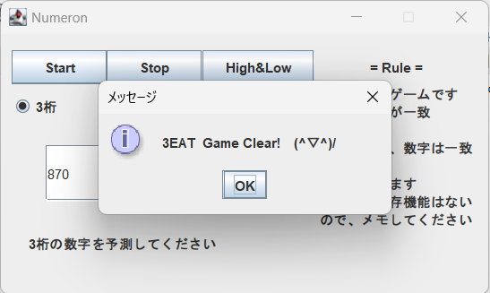
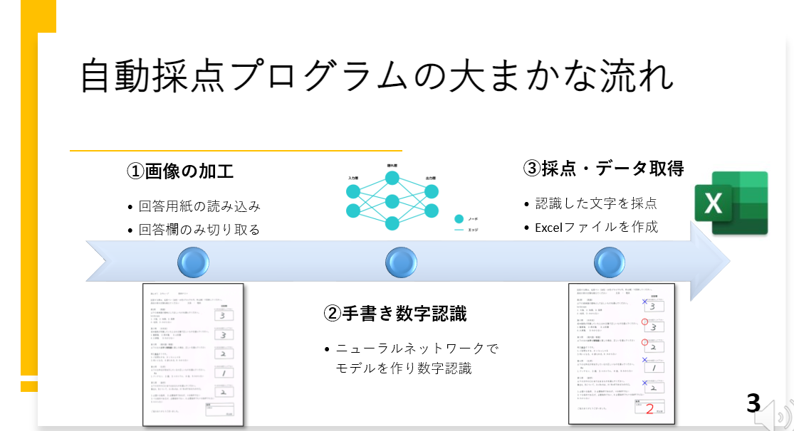
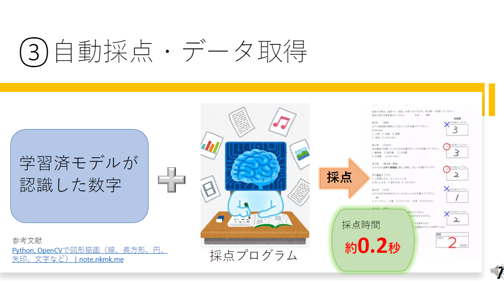
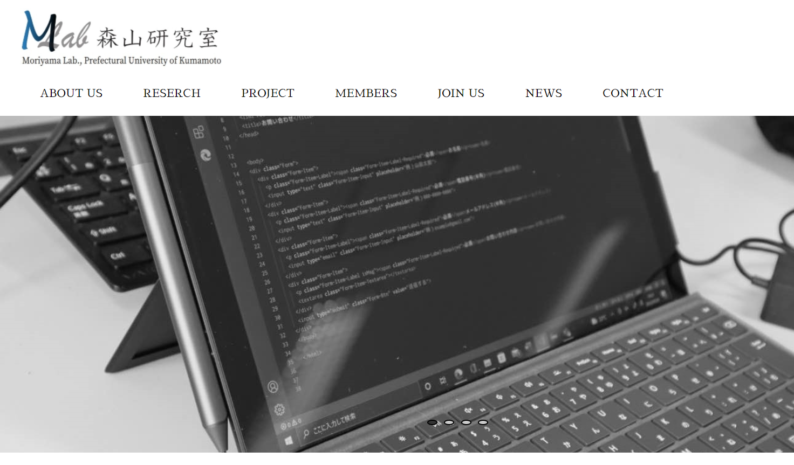
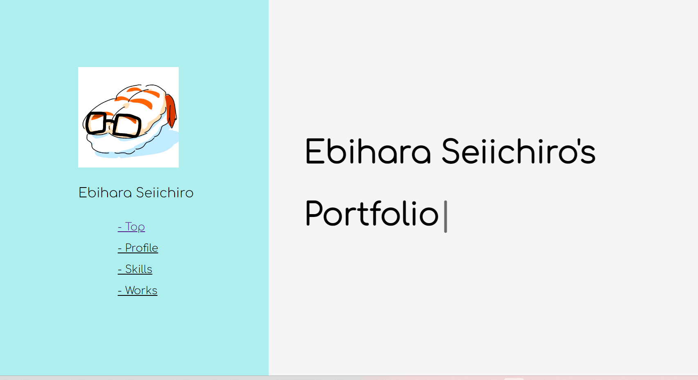

Ebihara Seiichiro's Portfolio
Profile
主にJava、Pythonを使っています。AIや機械学習にも興味を持ち、Kaggleにも挑戦しています。常に新しい技術にチャレンジし、みんなの役に立つ開発をしていくことを目指しています。
Name 海老原誠一郎
SNS GitHub、Twitter
Hobby 読書、温泉めぐり
History 2020~ 熊本県立大学 総合管理学部
Skills
-
Java 65
-
Python 50
-
JavaScript(jQuery) 40
-
HTML・CSS 50
-
Linux 40
-
SQL 30
※これらの数字は主観的判断によるものです。
主な開発環境：Eclipse、Android Studio、VSCode、Google Colaboratory
paizeランク：Bランク(1/24更新) paizaについて
Works
１，Numeron
 Javaを学習し始めて、アウトプットとして何か制作したいと思い、当時自分の中でハマっていたゲーム「Numeron」を作りました。 ＜開発言語・環境＞ Java、Eclipse
２，自動採点プログラム
 授業活動の一環として、文字認識機能搭載の自動採点プログラムを制作しました。 ＜開発言語・環境＞ Python、Google Colaboratory
３，研究室HP
私が所属しているゼミの活動を発信するツールとして制作しました。 ゼミのHPのリンクです（現在は学内のみで閲覧可能になっています） ＜開発言語・環境＞ HTML・CSS、JavaScript(jQuery)、VSCode
４，ポートフォリオ
今まで自分が制作したものを外部に公開するために作りました。 ＜開発言語・環境＞ HTML・CSS、JavaScript(jQuery)、VSCode
これらのGitHubはこちらです(現在、取り組んでいます）